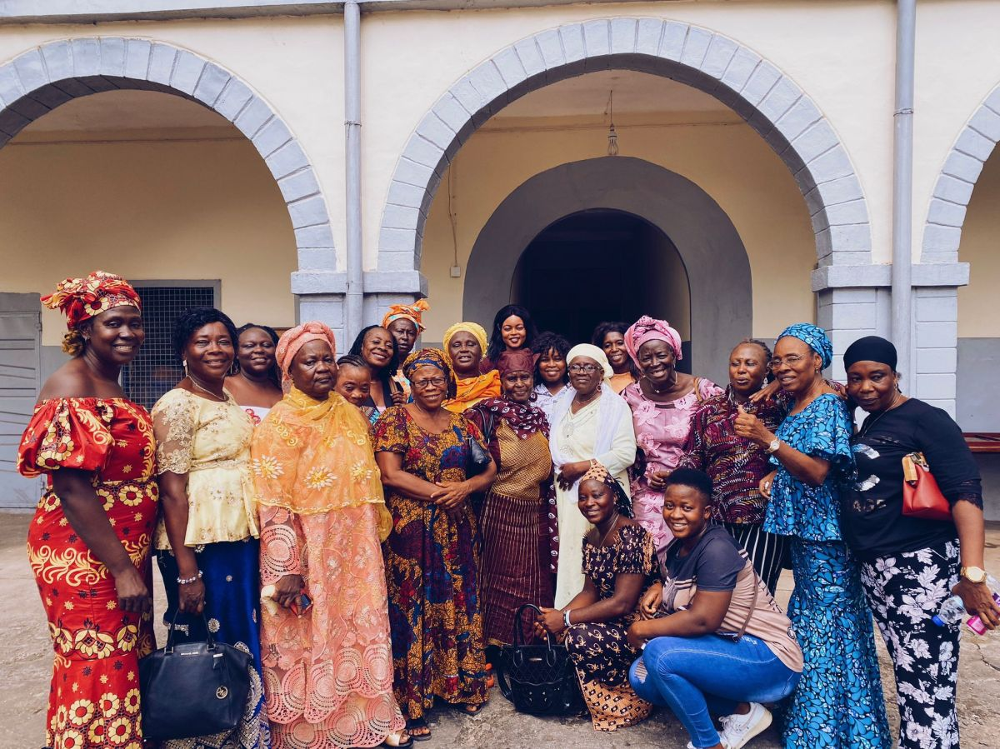

Women’s Rights to Land Projects
07 August 2013

We have recently undertaken a project in conjunction with Action Aid International with the aim to raise awareness of women’s rights to own land and build capacity among women farmers in rural areas. We feel that this is an important area to work on as very few women in Sierra Leone are able to own land. This leaves them vulnerable, as even though they work on the land to provide for their families they have no control over it. Women are routinely left out of decision making with regards to the use and sale of land which menas they can find themselves suddenly without any form of income and no saftey net.
First we organised a community outreach programme in Sella-Limba and Magbaimba N’duwahun in Bombali District. The key stakeholders were gathered making sure that women were well reporesented and a talk was delivered on the importance of women being able to own land. The purpose of the talk was to raise awareness and build conciousness on women’s rights and access to land.
Building on the work of the awareness raising we undertook a second activity in the same area. We orgnaised a 2 day training event for 20 rural women farmers to teach them the basic agronomic practices of seed bank management and post harvest management. The training was a great success with the women saying they were excited to put the new techniques they had learned into place and were looking forward to better harvests in the future.
The third activity was facilitating the formation and registration of 6 women farmers associations with the District Council, Ministry of Agriculture Forestry and Food Security and the Ministry of Social Welfare, Gender and Childrens Affair’s. This activity was run in 3 cheifdoms Bombali-Shebora, Sella-Limba and Magbaimba N’duwahun in the Bombali District, Northern Region of Sierra Leone. We visited the communities to find out the type of farming they were doing and how they organise their meetings. We then helped the farmers groups develop their by-laws and write minutes for their meetings. The next step in getting the groups registered was to set up bank accounts, which was a bit difficult as we needed passport photographs of the account holders. Luckily, one of our volunteers had a camera so we could get that done as quickly as possible! As part of the project, WOFHRAD placed a small amount of capital (le250,000) in each account to enable the women to get started. The last thing we did was to have a ceremony to distribute the cirtificates to representatives of each group. The women were all really happy that their organisations were now registered with the correct authorities and hope that their groups will go from strength to strength.
The last activity in this project was a public lecture on women’s rights to land. It was held on 6th July, 2013 at the Sierra Leone Teachers Union hall in Makeni. There was some concern in the WOFHRAD office that we would not get a good turn out to the lecture as invitations were given out rather last minute. However, on the day all the staff were amazed by the 121 people who attended the lecture! The main lecture was conducted by Mr Marah, who is a human rights officer at UNIPSIL in Makeni. There was also a section of the lecture where members of other organisation gave a representation of the views of their collegues, for example we had representatives from the Makeni Police, Sierra Leone Armed Forces, Teachers, Chiefdom councilors, students (secondary and tertiary) and a representative from the Council of Churches and Imams. Overall the lecture was a success, feedback was positive and we hope that all the attendees will begin to talk to their friends and collegues about women’s rights to land and that it may be the begining of a change in attitude.